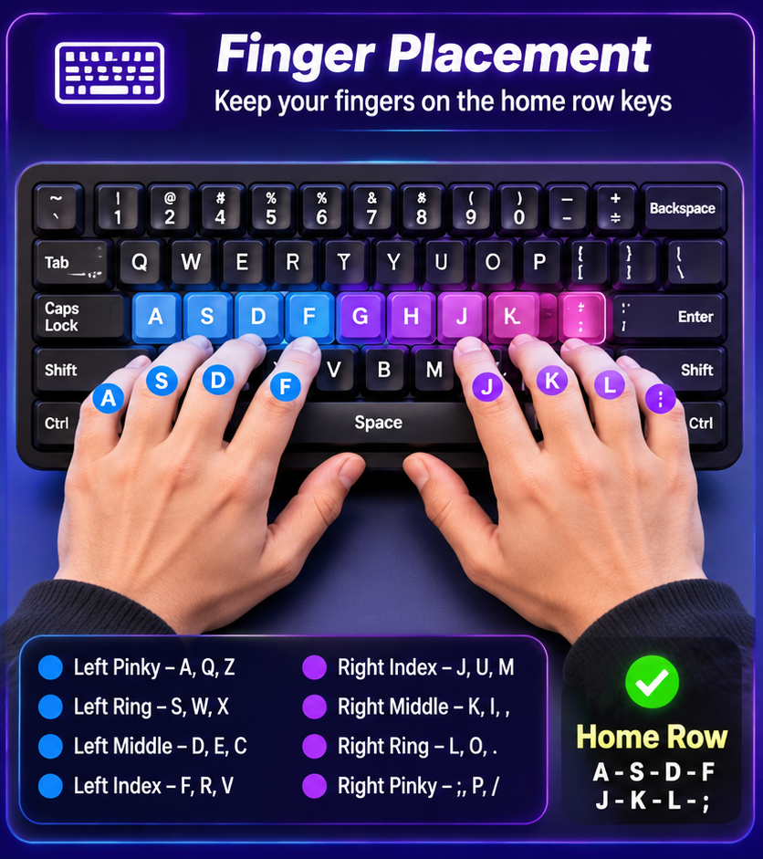
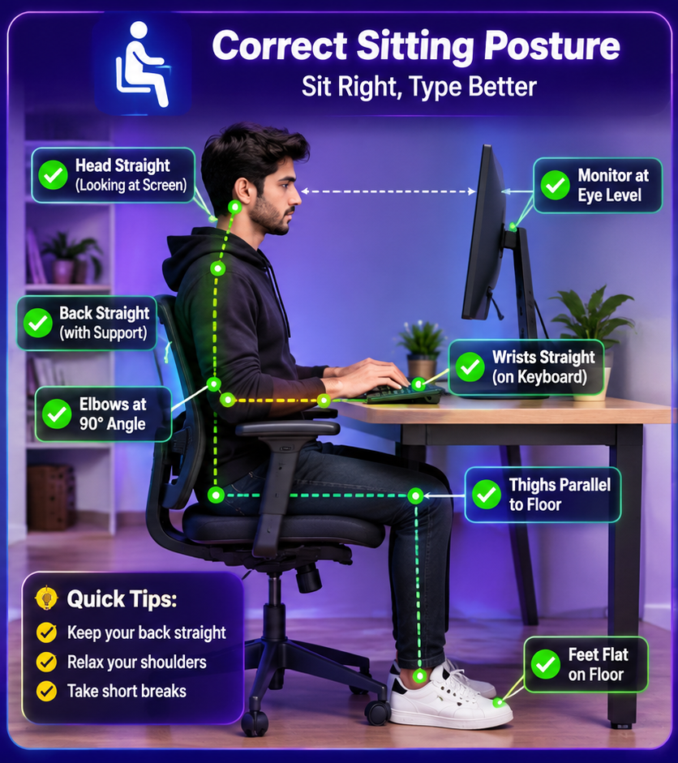

Looking at the Keyboard
Looking down at every key interrupts your typing flow. Train yourself to recognize key positions.
Learn the right typing techniques, train your fingers, reduce mistakes and gradually improve your typing speed.
Before improving your speed, understand the habits that make typing slower.
Looking down at every key interrupts your typing flow. Train yourself to recognize key positions.
Using only two fingers makes them travel longer distances. Learn to use all ten fingers.
Typing too quickly without control creates mistakes and forces you to correct words.
Practicing only occasionally makes it harder to develop consistent typing habits.
Each finger has its own group of keys. Learning these positions helps your fingers move efficiently.
Place your left hand on the left side of the keyboard and your right hand on the right side.

The home row is the starting position for touch typing. Your fingers return here after reaching other keys.
Place your left fingers on A, S, D and F. Place your right fingers on J, K, L and semicolon.
Practice slowly and focus on using the correct fingers.
asdf jkl;
fdsa ;lkj
asdf fdsa
jkl; ;lkj
Touch typing means typing without constantly looking at your keyboard.
Keep your eyes on the text you are typing instead of searching for every key.
A comfortable typing position helps you practice for longer without unnecessary strain.
Sit upright with your back supported and shoulders relaxed.
Keep your screen at a comfortable height so you do not need to bend your neck.
Keep wrists in a neutral, relaxed position. Avoid bending them sharply.
Keep your feet supported and your body balanced while typing.

Fast typing is useful only when you can also type correctly. Build accuracy first.
Slow but highly accurate typing.
Faster typing with many mistakes.
Repeating familiar words helps you become comfortable with common letter combinations.
Some keys may feel uncomfortable at first. Give them extra attention during practice.
Practice reaching these keys with the correct finger. Always return to the home row after each movement.
qaz qaz qaz
pop pop pop
mix box mix box
zoom zero zoom
Use these simple habits to improve your typing gradually and consistently.
Learn the correct finger positions instead of relying on only two fingers.
Reduce the habit of looking down at your keyboard while typing.
Short daily sessions are more useful than occasional long sessions.
Try to maintain a comfortable, consistent typing rhythm rather than rushing.
Notice which letters and words cause problems and practice them again.
Learn to type numbers without looking at your keyboard. Practice the number row to improve your typing speed and accuracy.
Practice these keys using the recommended fingers.
Use the recommended finger for each number key. Avoid typing every number with your index fingers.
Try to type numbers without looking down at the keyboard.
Focus on accuracy before trying to increase your speed.
Practice these number combinations regularly.
12345 67890
98765 43210
11223 44556 77889
2026 1234 5678 9090
100 250 500 750 1000
Learn how to type special characters and symbols using the Shift key. Practice common keyboard symbols to improve your typing skills.
Learn these symbols and their corresponding keys.
Practice these commonly used keyboard characters.
+ - = × ÷
( ) [ ] { }
< > / \ | ! @ #
, . ? ! ; : ' "
Hold the Shift key and press the required number or symbol key.
When typing a symbol with one hand, use the Shift key with the opposite hand whenever possible.
Release the Shift key after pressing the required character.
Practice these combinations to improve your accuracy.
! @ # $ % ^ & * ( )
+ - = / \ | < >
( ) [ ] { } < >
Hello! How are you? @2026
Price: $50 + 10% = $55
name@email.com #Typing!
Start with a manageable routine and increase practice time as you become comfortable.
Practice home row letters slowly.
Practice easy and frequently used words.
Type complete sentences with good accuracy.
Repeat the keys that give you difficulty.
Avoid these habits to make your typing practice more effective.
Looking at the keyboard after every key.
Using only two fingers for all typing.
Typing too fast and ignoring mistakes.
Pressing keys with too much force.
Practicing without a regular routine.
Ignoring uncomfortable hand positions.
Apply what you have learned. Practice consistently and track your typing performance.